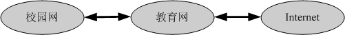
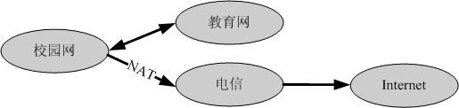
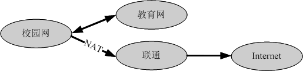
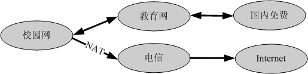
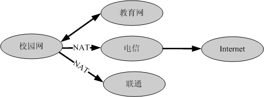
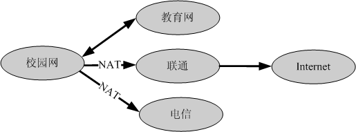
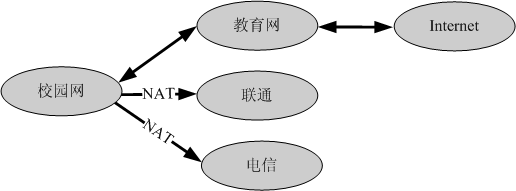

| 名称 | 特点 |
|---|---|
| 1. 中国教育和科研计算机网络出口 |
科大到教育网(CERNET)共有1.2G带宽。这个出口连接 国内高校的网络比较快，连接到校外网络不需要使用地址转换(NAT) |
| 2. 中国电信网络出口 | 科大到合肥电信公司有1.2G带宽，这个出口连接大部分网站都比较快 |
| 3. 中国联通网络出口 | 科大到合肥联通公司有1.2G带宽，这个出口连接大部分网站都比较快 |
| 4. 中国移动网络出口 | 科大到合肥移动公司有1G带宽，这个出口连接大部分网站都比较快 |
| 5. 中国科技网出口 | 暂不对"网络通"用户提供服务 |
| 6. 中国教育和科研网IPv6出口 | 10G对外带宽，校内直接使用 |
其中出口2、3、4都必须使用地址转换方式(NAT)，因此当使用出口2、3、4时外面的机器
无法访问你的机器。
| 出口选项 | 数据流示意图 | 说明 |
|---|---|---|
| 1. 教育网出口 |  | 走教育网，不经过地址转换(NAT) |
| 2. 电信网出口 |  | 到教育网走教育网，其他经过NAT走电信 |
| 3. 联通网出口 |  | 到教育网走教育网，其他经过NAT走联通 |
| 4. 电信网出口2 |  | 到教育网定义的免费地址走教育网，其他经过NAT走电信 |
| 5. 联通网出口2 | 到教育网定义的免费地址走教育网，其他经过NAT走联通 | |
| 6. 电信网出口3 |  | 到教育网走教育网，到联通地址经过NAT走联通，其他经过NAT走电信 |
| 7. 联通网出口3 |  | 到教育网走教育网，到电信地址经过NAT走电信，其他经过NAT走联通 |
| 8. 教育网国际出口 |  | 到电信地址经过NAT走电信，到联通地址经过NAT走联通，其他经过教育网 |
| 9. 移动网出口 | 到教育网走教育网，其他经过NAT走移动 |
使用方式1有如下优点：
1. 出国使用自己的IP访问，未经过地址转换，不容易受到干扰。
2. 访问国外电子期刊，不会由于某个地址转换设备IP被封而无法访问。